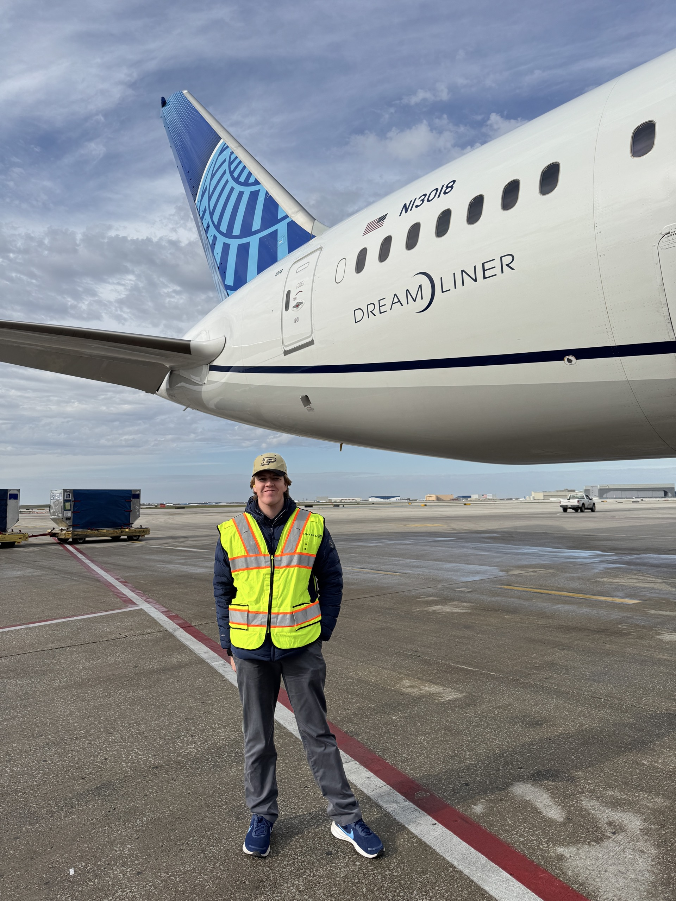

01 / About CJ Haydon
Hi, I’m CJ.
Nice to meet you!

Here’s a little about my experience and the things I enjoy outside of aviation.
A little about me
my journey in aviation and beyond
My experience brings together flight operations management, team leadership, and public speaking
At Purdue’s School of Aviation and Transportation Technology, I’m a student flight dispatcher, aviation ambassador, and a UAS (drone) teaching assistant. I help manage flight operations at Hangar 6, run hands-on labs for students in the UAS department, and share Purdue’s aviation program with prospective students and their families on tours and in information sessions
Besides leading labs, my leadership experience includes managing multiple volunteer teams during Purdue Aviation Day, the largest student-run collegiate air show in the country. I was responsible for coordinating with my volunteers, controlling the flow of traffic in and out of the show, and ensuring the safety of the patrons and volunteers alike.
I also bring experience in customer service, hospitality, and community operations, including waterfront gate management and assisting guests in Spanish.
Outside of aviation, I’m a stand up comedian and enjoy learning about other cultures through food and music.
Hands-on experience
Build. Fly. Keep learning.
Aircraft & projects
A MakeFlyEasy Believer fixed-wing build and sophomore-year flight labs, including a Purdue University promotional video using four aircraft types.
Explore UAS projects